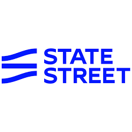

Why I Love Building Microservices with Spring Boot and AWS Lambda
Exploring the synergy between Spring Boot microservices and serverless AWS Lambda functions for building scalable, cost-effective cloud applications.
Lead Full Stack Java Developer | 12+ Years | Spring Boot | AWS | Microservices | Angular | DevOps
Senior Software Engineer with 12+ years of expertise in architecting enterprise solutions across banking, insurance, and healthcare sectors. Proven track record of leading teams, delivering scalable microservices, and implementing cloud-native applications on AWS. Currently driving innovation at GEICO.
Hi, I’m Venkat Chada — a Staff Engineer and AI Architect passionate about building scalable, intelligent systems that connect modern enterprise software with real-world impact. Over the years, I’ve worked across full-stack development, cloud architecture, and automation — primarily using Java Spring Boot, AWS, Python, and DevOps CI/CD workflows.
My work blends deep backend engineering with AI-driven innovation. I’ve designed and deployed machine learning services using TensorFlow, PyTorch, and Scikit-learn, integrated into microservices running on AWS ECS Fargate and Lambda. I enjoy translating complex data science models into production-ready APIs that deliver real-time intelligence, automation, and measurable business outcomes.
I’m constantly exploring how cloud platforms and AI frameworks can simplify customer experiences, improve decision-making, and create more adaptive enterprise systems. When I’m not developing, I spend time studying new AI trends, refining automation pipelines, and mentoring teams on practical ways to bring intelligence into software products.
Deep expertise in Java/J2EE ecosystem spanning Core Java (Collections, Multithreading, Data Structures, Exception Handling), and advanced frameworks. Extensive experience building Spring Boot microservices using Spring Core, Spring MVC, Spring AOP, Spring Web Services, and Spring Cloud for distributed systems. Proficient in implementing MVC architectures with both Spring and Struts frameworks.
Skilled in database technologies including Oracle, DB2, MySQL, and MongoDB for NoSQL solutions. Implemented robust persistence layers using Hibernate ORM, JDBC, and developed complex PL/SQL stored procedures and triggers. Expertise in API development - designed and implemented RESTful services using JAX-RS, Jersey, and SOAP-based web services with WSDL, UDDI, JAX-WS.
Extensive AWS cloud experience including Lambda functions (Node.js for serverless architectures), DynamoDB, S3, CloudWatch monitoring, API Gateway for access control and security policies. Designed and deployed AWS Connect contact center solutions integrating Amazon Lex for intelligent IVR workflows, real-time customer support automation, call recording, and dynamic routing through parameterized Lambda functions.
Expert in Infrastructure as Code using Terraform - created reusable modules and scripts for automated AWS resource provisioning, ensuring consistency and scalability. Proficient with containerization and orchestration: managed Docker images and containers, implemented Kubernetes clusters for microservices with deployments, services, ingress controllers, auto-scaling, and high availability. Established CI/CD pipelines using Jenkins, GitHub Actions, Maven, and Ant, achieving 95% deployment success rates.
Recently, I’ve been leading projects that combine Agentic AI principles and Large Language Models (LLMs) to transform how enterprise systems handle voice and chat interactions. I implemented an Agentic AI IVR system on AWS Connect that uses reasoning-driven LLMs for intelligent intent recognition, dynamic call routing, and self-learning conversation flows.
The platform integrates Amazon Lex V2 bots, AWS Lambda, and Spring Boot microservices with OpenAI and Bedrock LLM APIs to enable autonomous multi-agent conversations across channels like voice, chat, and email. Each agent handles tasks such as context retrieval, workflow execution, and decision support — reducing manual intervention and enhancing customer experience significantly.
The system is deployed on AWS ECS Fargate with real-time monitoring via CloudWatch and X-Ray, and leverages DynamoDB and S3 for stateful memory and context storage. Through this architecture, I’ve been able to bring the emerging paradigm of autonomous LLM agents into production-grade enterprise environments.
Proficient in modern frontend development with Angular - created single-page applications with Angular Material, developed responsive B2B applications, implemented automation scripts using Protractor and Karma. Experience with React for building interactive UIs, state management with Redux. Strong foundation in web technologies: HTML5, CSS3, JavaScript, jQuery for AJAX calls and asynchronous requests, Google Web Toolkit (GWT) for enterprise applications, and Vaadin components as widgets.
Implemented enterprise integration patterns using Spring Integration for complex integration flows coordinating communication between systems. Extensive experience with messaging systems: ActiveMQ and JMS for queue and topic configurations, enabling efficient message communication and managing events across distributed systems. Integrated SSO mechanisms for seamless authentication, implemented Spring Security for access control policies, and configured IBM WebSeal for secure authentication and authorization.
Proficient in data processing technologies: created ETL jobs using Pentaho and Talend for business analysis reports, implemented Elasticsearch for advanced query processing and optimization, developed search engines using Apache Lucene and SOLR with indexing on MongoDB. Experience with GraphQL - utilized subscriptions for real-time data updates, conducted performance optimizations for handling large volumes of concurrent requests.
Strong advocate for quality assurance: built comprehensive unit tests using JUnit with 80%+ coverage, designed and executed integration tests for API endpoints, implemented end-to-end testing with Protractor. Established monitoring and observability using AWS CloudWatch, Prometheus, ELK Stack, and Splunk for tracking performance, availability, and security. Implemented centralized logging and distributed tracing for microservices.
Experienced in Agile/Scrum methodologies - participated in sprint planning, daily scrums, and retrospectives. Proficient with project management tools: JIRA for ticket tracking, bug management, and maintaining user stories; CA Agile Central (Rally) for agile workflows; VSTS for managing development cycles. Skilled in version control using Git and SVN, and familiar with design patterns including Singleton, Factory, DAO, Session Façade, and MVC for building maintainable, scalable applications.
Throughout my career, I've demonstrated strong leadership in mentoring teams, collaborating with business analysts to translate requirements into technical solutions, and maintaining production systems with focus on reliability, security, and performance optimization.
I worked with GEICO’s Telecommunications Engineering team, responsible for designing and modernizing enterprise-grade IVR systems across multiple lines of business including BOAT, Claims (MOAT), and the GEICO Service Center. As a Staff Engineer, I led the end-to-end architecture and development of contact flows in AWS Connect and built a custom Cloud Contact Portal (CCP) for agents using React and Angular, deployed on Azure AKS for high availability and scalability.
The AWS Connect platform leveraged Amazon Lex V2 bots, Lambda microservices, and API Gateway for real-time interaction routing and data retrieval from downstream systems. I developed several standalone Angular apps and Spring Boot microservices to support operational dashboards, queue management, and analytics. ETL pipelines were automated using AWS Glue for transforming call and session data stored in PostgreSQL and SQL Server via Hibernate. For observability, we relied on CloudWatch metrics, alarms, and structured logging across the microservice ecosystem.
Recently, I integrated Agentic AI and LLM-powered assistants into the IVR platform to create self-learning conversational flows capable of reasoning and adapting in real time. These LLM agents—deployed via AWS Lambda and orchestrated through Amazon Connect and Bedrock—analyze caller intent, perform contextual lookups through Spring Boot services, and dynamically update the conversation path or agent recommendations. This hybrid architecture of Java microservices + AWS AI services has accelerated resolution rates, reduced manual transfers, and established GEICO’s contact center as a forward-looking model of intelligent customer engagement.
Worked on the EDGAR (Electronic Data Gathering, Analysis, and Retrieval) system for the U.S. Securities and Exchange Commission (SEC), a large-scale platform that automates the submission, validation, indexing, and retrieval of corporate filings.
Contributed as a Java Full Stack Developer designing and implementing Spring Cloud–based microservices with an Angular Material UI, deployed on AWS EKS. Developed a high-performance document search feature using Apache Lucene and Solr, enabling intelligent, full-text querying across millions of filings.
Delivered monitoring and reporting dashboards through CloudWatch and Splunk, implemented Terraform (IaC) for infrastructure provisioning, and managed the development lifecycle using Git and Agile Scrum practices.
Enhanced the application with intelligent document processing and contextual search capabilities to improve data discoverability and analytics. Designed metadata extraction services using Spring Boot and AWS Lambda to classify filings, tag key entities, and deliver enriched search results within the EDGAR workflow.
Worked on the KEB (Know Every Business) platform within Comcast Business — a marketing intelligence web application designed to empower Comcast field representatives to identify and connect with non-Comcast businesses, build tailored service packages, and expand commercial outreach.
The project involved architecting and developing ETL pipelines using Pentaho, Talend, and AWS Glue to ingest, cleanse, and normalize large datasets from multiple third-party sources including CoStar and regional data providers. Leveraged various AWS services for data staging, transformation, and access through Lambda, DynamoDB, API Gateway, and CloudFront to deliver performant, real-time data services for the front-end applications.
Implemented Spring Boot microservices integrated with Angular-based web interfaces, providing intuitive dashboards for marketing teams and field reps. Built infrastructure as code with Terraform and automated CI/CD deployment pipelines using AWS DevOps tools. Ensured high system reliability, security, and scalability across environments.
As part of the core engineering team, I contributed to enhancing data accuracy, scalability, and user engagement through continuous optimization of ETL and API workflows. Designed data validation and deduplication frameworks to improve data quality across business datasets and implemented caching layers for faster lookups. Collaborated with marketing analysts to transform business requirements into technical solutions, enabling actionable insights and streamlined prospect targeting. This platform significantly improved sales efficiency and became a key decision-support system for Comcast’s commercial growth initiatives.
Contributed to the development of AgentPak® at Norfolk & Dedham Group, a web-based platform built to simplify the creation and management of Property & Casualty (P&C) insurance policies. The system enabled insurance agents and policyholders to create, update, and manage policies efficiently while integrating with MassPrinting’s document output solution for automated print and electronic policy distribution.
Worked as a Full Stack Engineer designing and implementing Spring Boot–based microservices following Netflix OSS architecture patterns including Eureka, Ribbon, and Hystrix for service discovery, load balancing, and fault tolerance. Utilized Hibernate ORM for data persistence with Oracle Database as the backend.
The user interface was initially built using Bootstrap and jQuery and later migrated to Angular to deliver a dynamic, component-driven experience for insurance agents. I also maintained legacy applications developed in Apache Struts and led the migration of core modules from Struts to Spring MVC, reducing technical debt and improving performance and maintainability.
Collaborated with cross-functional teams to enhance data quality, compliance, and reporting capabilities. Implemented CI/CD pipelines using Jenkins and Git for source management, and Terraform for Infrastructure as Code (IaC). Designed auditing and reporting enhancements that improved policy visibility and accelerated agent onboarding and policy issuance cycles.
The resulting platform delivered a more efficient, fault-tolerant, and scalable solution for mid-sized insurance carriers — combining robust backend architecture with intuitive front-end usability, empowering agents to provide faster, more accurate service to their customers.

Sr. Full Stack DeveloperWorked on the LiveTrial application at State Street Corporation, a mission-critical hedge fund analytics platform designed to track fund performance, debt allocations, and investment positions across large-scale institutional portfolios. The system delivered high-precision financial reporting and performance attribution for global fund managers.
Developed RESTful web services using Spring MVC and legacy Apache Struts frameworks to integrate with multiple backend systems and provide real-time access to fund data. The UI was built using Google Web Toolkit (GWT) to deliver dynamic, widget-based dashboards and interactive performance charts for portfolio managers and analysts.
Engineered high-performance multithreaded Java components for complex fund and debt allocation calculations. Applied Java concurrency utilities to optimize computation-heavy workloads and reduce response latency under high data throughput conditions. Collaborated with the mainframe teams to synchronize data exchange between distributed systems and COBOL-based legacy processes.
Designed and deployed applications following DevOps principles — automating build and deployment pipelines using Jenkins, Maven, and Shell scripting. Implemented robust monitoring and alerting using Splunk and AppDynamics to track application performance, throughput, and availability in production environments.
Worked closely with quantitative analysts and product teams to validate performance algorithms and reporting logic, ensuring accurate tracking of fund benchmarks, performance ratios, and allocations. The LiveTrial platform became a cornerstone tool for hedge fund clients, enabling precise and transparent performance evaluation at scale.
Worked at CA Technologies on two flagship enterprise products — Arcserve and erwin Data Modeler. Arcserve is an enterprise-grade data protection and disaster recovery platform providing backup, replication, and high-availability solutions across hybrid infrastructures. erwin Data Modeler is a data architecture and governance tool enabling organizations to design, maintain, and deploy enterprise-scale data models across databases like Oracle and SQL Server.
Contributed as a Full Stack Java Developer building and maintaining Spring Boot microservices and REST APIs for Arcserve’s scheduling, job orchestration, and backup-policy modules. Implemented data model automation and schema deployment components for erwin Data Modeler, integrating with Oracle and SQL Server backends for versioned model updates and metadata synchronization.
Developed front-end modules using Bootstrap and later migrated to Angular for improved UI responsiveness and maintainability. Maintained legacy Apache Struts applications and led the migration of key modules to Spring MVC, reducing maintenance overhead and aligning with modern Spring Boot standards.
Implemented DevOps pipelines with Jenkins and Git for version control, and used Terraform for Infrastructure as Code (IaC). These efforts improved deployment efficiency and reduced build times while enhancing product stability and integration across multiple data-protection and modeling tools.
Computer & Information Sciences
Southern New Hampshire University, NH
Computer Science Engineering
Jawaharlal Nehru Technological University, India
Click on any category to expand and explore my technical expertise
Real-world enterprise solutions delivered at GEICO and beyond
Designed and deployed enterprise-scale contact center solution integrating AWS Connect with Amazon Lex for intelligent IVR workflows. Implemented call recording, contact flow routing, and agent queues with dynamic configuration through parameterized Lambda functions.
Developed custom AWS Lambda functions in Node.js to enhance AWS Connect with intelligent conversational AI. Built Lex bots for automated call routing and customer intent recognition, implementing agentic AI patterns for real-time decision making.
Led the migration of legacy monolithic applications to cloud-native microservices architecture. Orchestrated deployment using Docker containers and Kubernetes clusters, implementing Spring Boot microservices with RESTful APIs hosted on AWS.
Built enterprise Single Page Application using Angular and Angular Material for exposing business transactional data through custom dashboards. Integrated with Spring Boot microservices and implemented real-time updates using GraphQL subscriptions.
Architected serverless API layer using AWS Lambda functions (Node.js) for CRUD operations on DynamoDB. Implemented API Gateway for rate limiting, throttling, and security policies, processing 100K+ requests daily.
Developed reusable Terraform modules and scripts to automate AWS resource provisioning for contact center environment. Implemented infrastructure as code for AWS Connect instances, Lambda functions, and networking configurations.
Created ETL jobs using Pentaho and Talend for business analysis reports. Processed millions of records daily from multiple data sources, transforming and loading into data warehouses for real-time analytics.
Built modern customer-facing web application using React with Redux for state management. Integrated with Spring Boot microservices backend, implementing real-time features using GraphQL and WebSocket connections.
Implemented comprehensive monitoring and logging solutions using AWS CloudWatch, Prometheus, and ELK Stack. Established centralized logging and distributed tracing for microservices, ensuring 99.9% system availability.
Implemented Kubernetes clusters to orchestrate containerized microservices, enabling efficient resource utilization and high availability. Configured deployments, services, ingress controllers, and auto-scaling policies.
Amazon Web Services
Associate Level • 2023
HashiCorp
Associate Developer • 2023
Oracle Corporation
Java SE 11 Developer • 2022
🏆 Employee Excellence Award for Cloud Migration Initiative (2023)
🌟 Mentored 15+ junior developers in full-stack development
📚 Active contributor to open-source Java and React projects
Exploring the synergy between Spring Boot microservices and serverless AWS Lambda functions for building scalable, cost-effective cloud applications.
A comprehensive guide on migrating legacy monolithic applications to cloud-native microservices architecture on AWS, with real-world challenges and solutions.
Best practices for implementing Infrastructure as Code using Terraform, integrated with Jenkins CI/CD pipelines for automated deployments and rollbacks.
Essential patterns and practices for building maintainable, scalable enterprise applications using Java Spring Boot backends and React frontends.
"Let's build something awesome together — I'm always open to discuss innovative projects and collaborations."